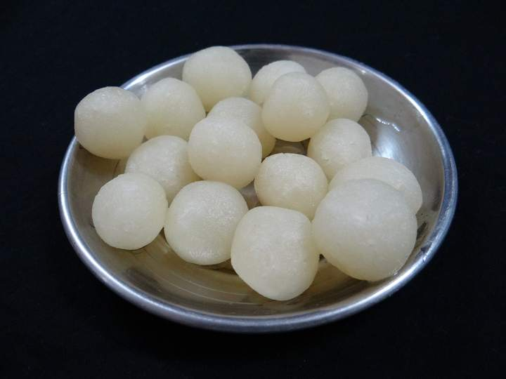
Rosogolla
Spongy, light, and still warm in the morning.
Kaiba, Khanakul, Hooghly · since 1987
Mutton kosha on Sundays, ilish when the rains come, and rosogolla made fresh every single morning.
Our story
Mishtimukh means “a sweet mouth”, which is how every Bengali meal is supposed to end. We opened in 1987 as a small mishti counter, and the lunch menu came later because customers kept asking what we ate in the kitchen.
The recipes are the ones our family cooks at home: mustard ground on a stone, mutton cooked low for hours, and chhena made from fresh milk each morning. Nothing is rushed, and nothing comes from a packet.
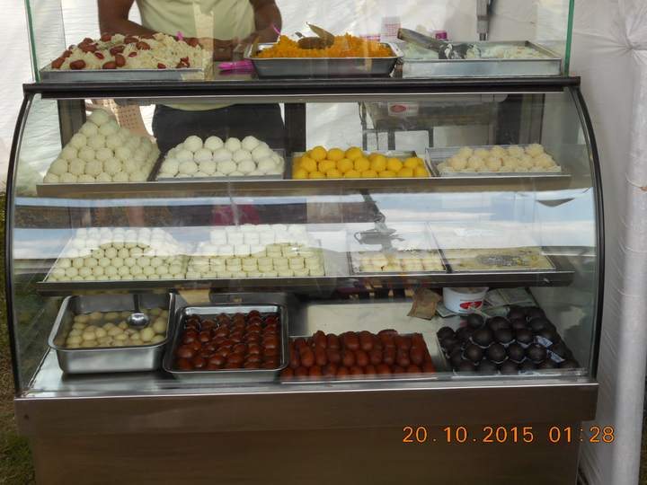
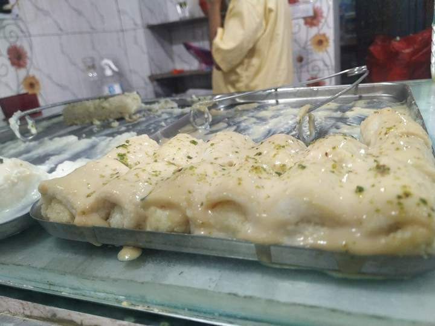
From the sweet counter
Our karigars start at five. By the time we open, the rosogolla are cooling and the doi has set. Eat in, or take a box home.

Spongy, light, and still warm in the morning.
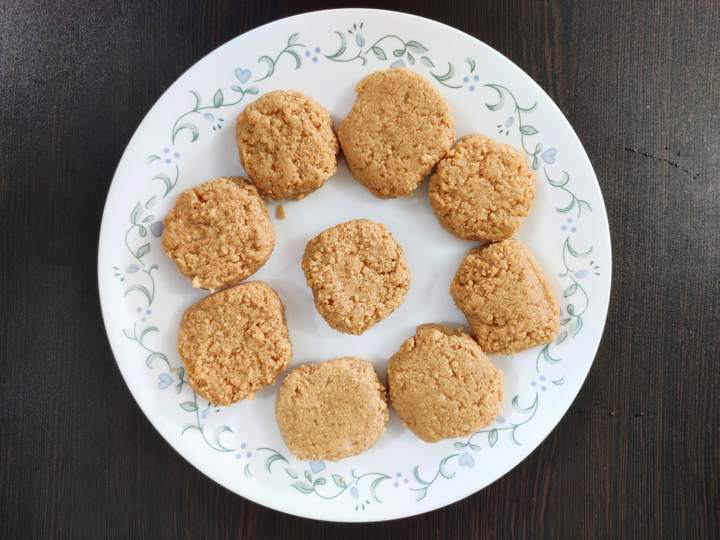
Made with date-palm jaggery when winter comes.
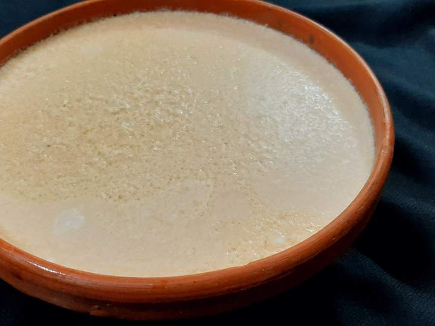
Set overnight in clay pots so it thickens just right.
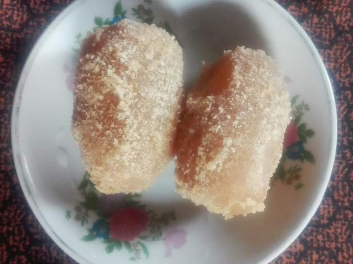
Firmer than rosogolla, rolled in khoya crumbs.
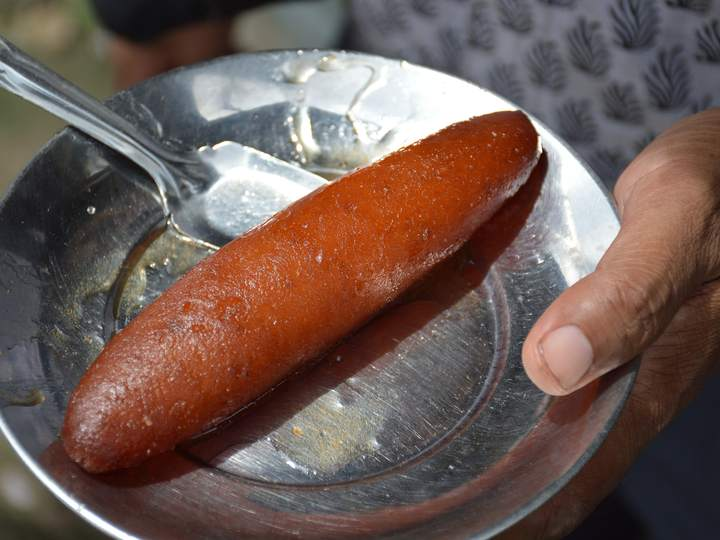
Fried long and dark, then left to soak in syrup.
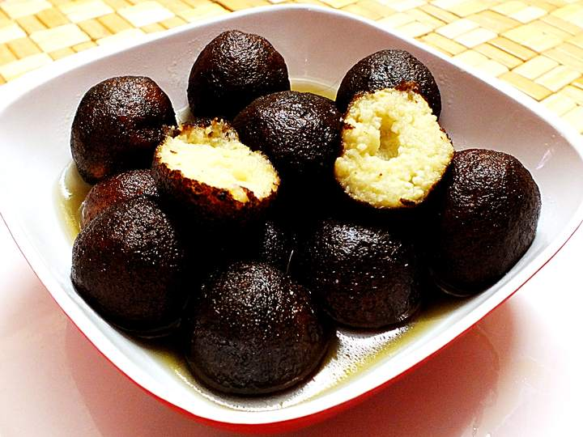
Rich and caramelised outside, soft in the middle.
Boxes of 6, 12 and 24 are packed fresh at the counter. See all sweets and prices
Gallery
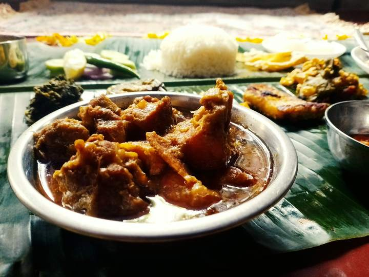
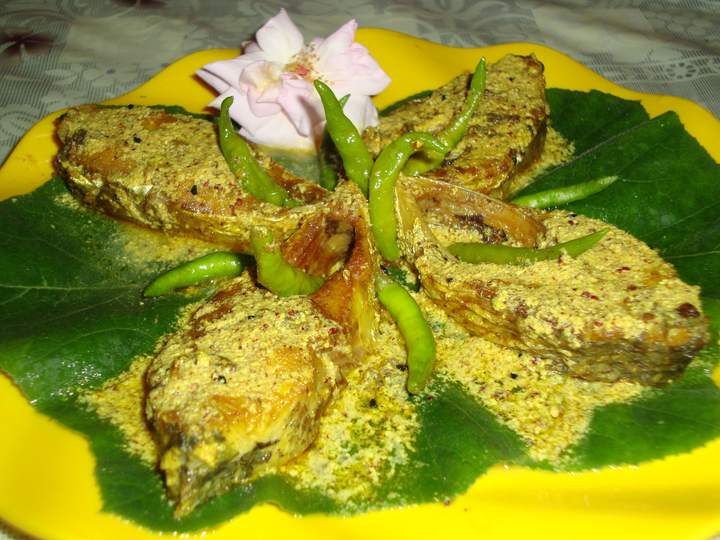
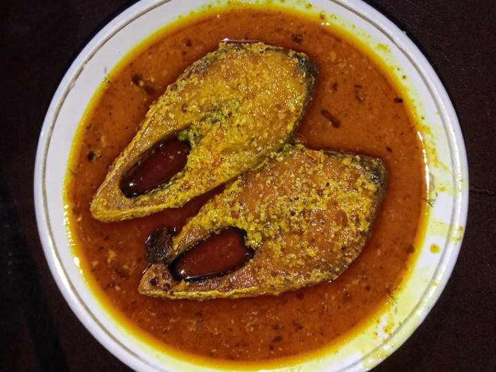
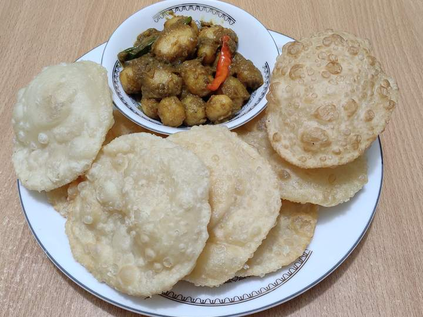
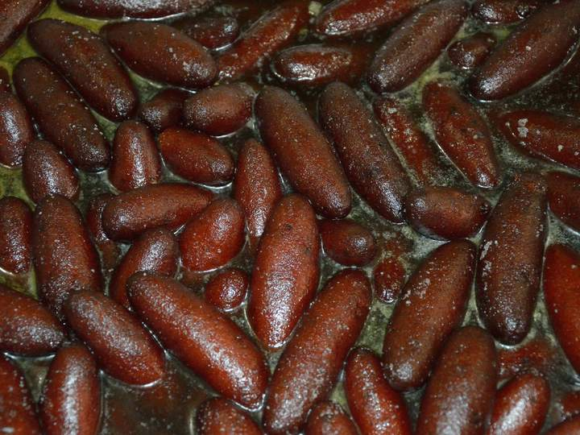
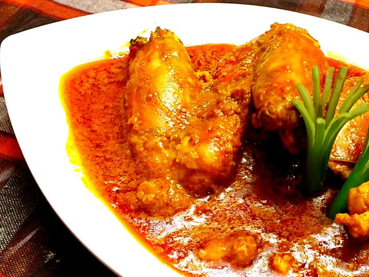
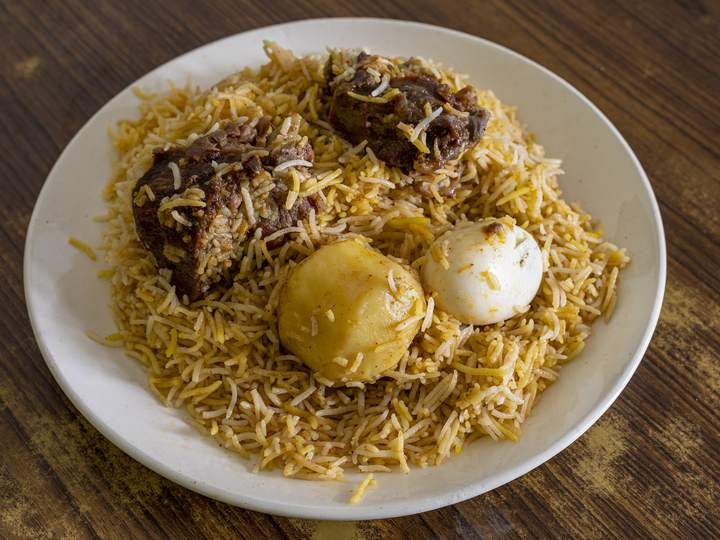
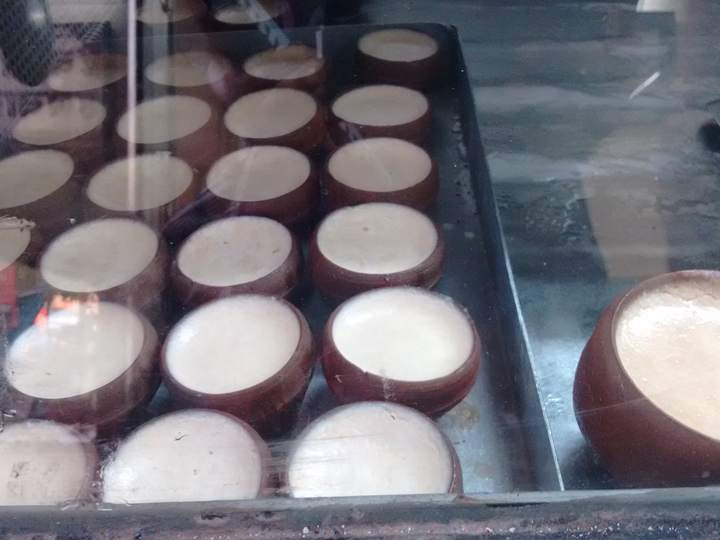
Guests
The kosha mangsho tasted exactly like my grandmother’s. We came for lunch and left with two boxes of sandesh.
Best mishti doi I’ve had outside Kolkata, and the chilli chicken is proper. Service was quick even on a busy Sunday.
Simple place, honest food. Get the chingri malai curry and leave space for the nolen gurer sandesh in winter.
Reviews are sample text for this demo site.
Reservations
Tables for lunch and dinner. For groups larger than 10, or to order sweets for a wedding or puja, please call us.
+91 98XXX XXXXX
Visit us
| Mon, Wed, Thu | 12:00 – 15:30, 19:00 – 23:00 |
|---|---|
| Fri – Sun | 12:00 – 23:30 |
| Tuesday | Kitchen closed |
| Sweet counter | Every day, 10:00 – 22:00 |
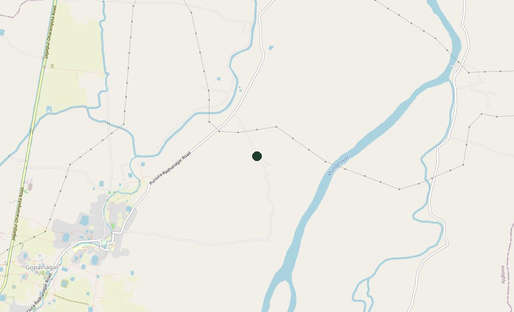